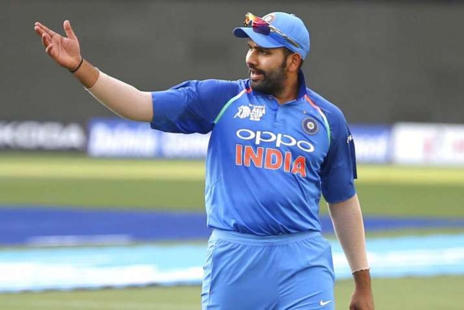

Rohit is a right-handed opening batsman and bowls right-arm off break occasionally. Rohit is widely popular for his aggressive style of batting where he likes to take the charge to the bowler. He is the only batsman in the world to hit three double centuries in ODI cricket. He also holds the record for most number of runs scored by a batsman in a single innings of ODI cricket (264 vs Sri Lanka). Because of his aggressive batting style, Rohit has been nicknamed 'Hitman'.
|  | |
Rohit Sharma, Team India’s vice-captain in the white-ball format has been a prolific run-getter. Named the ICC ODI Cricketer of the Year for 2019, the stylish opener became the first player in the history of the game to score five ODI centuries in one edition of the World Cup. He is also the first batsman to score four T20I centuries and is the first player to have twin centuries in his maiden appearance as a Test opener.